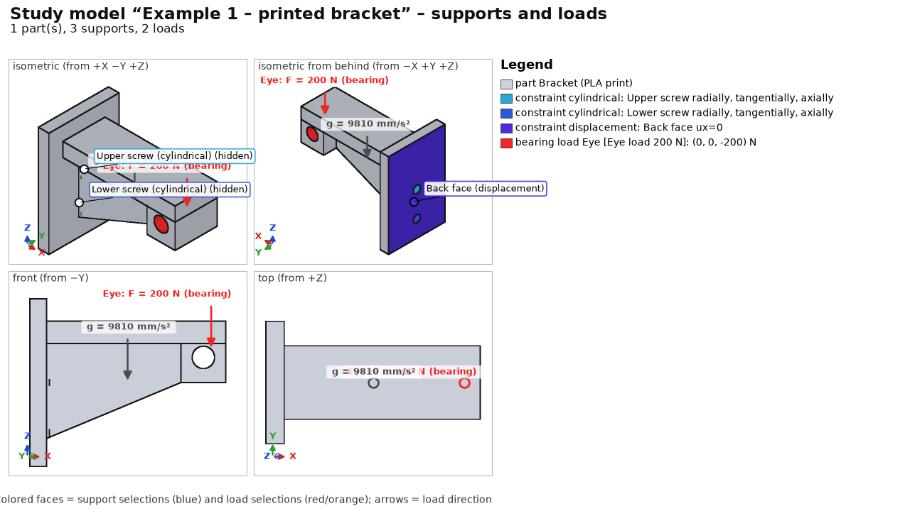
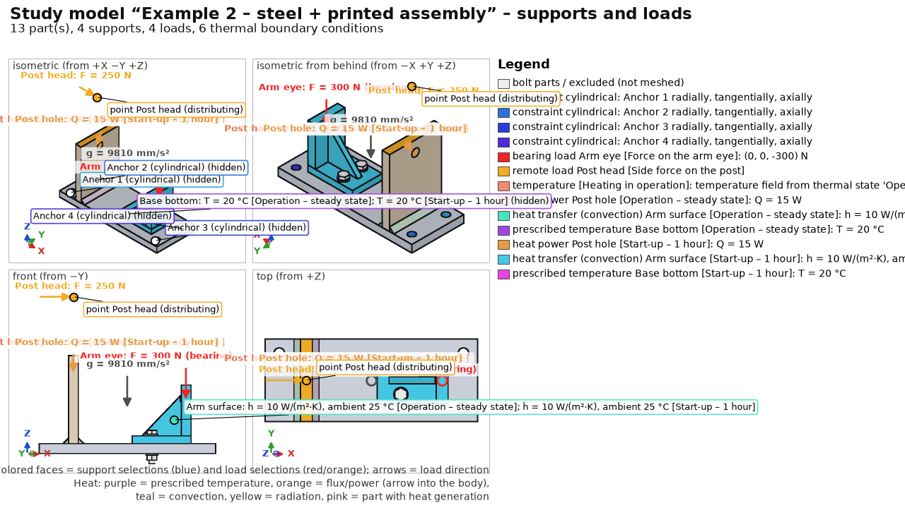
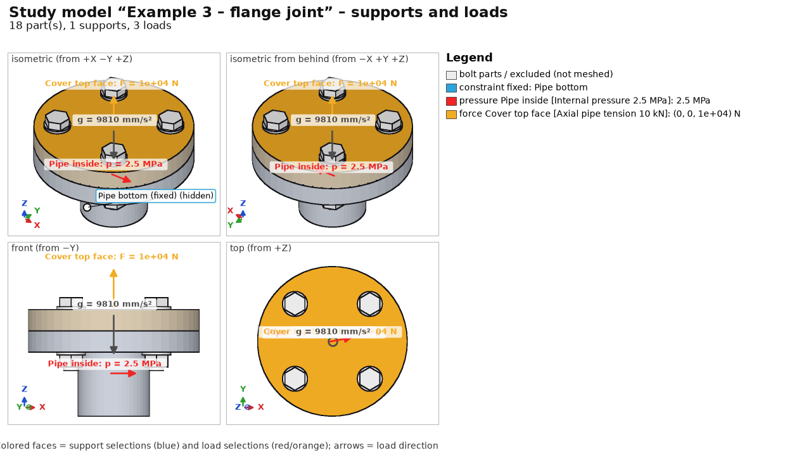
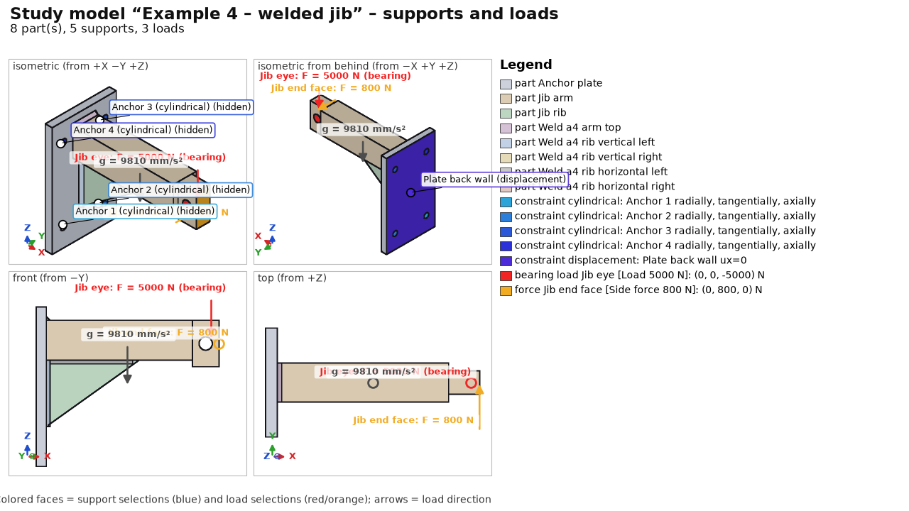
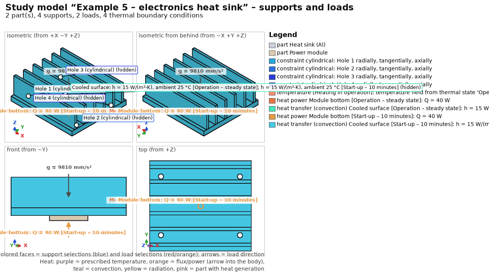
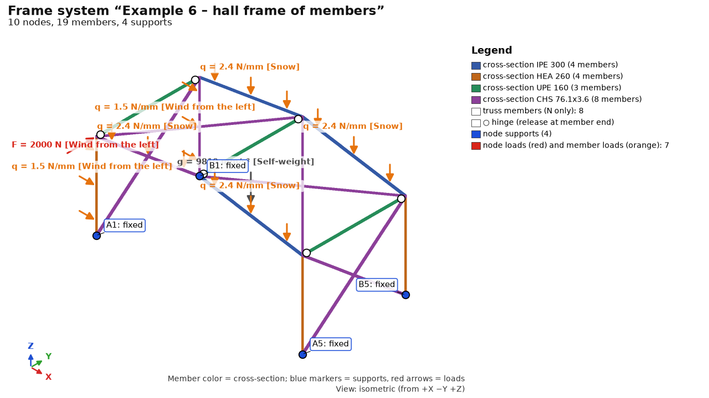
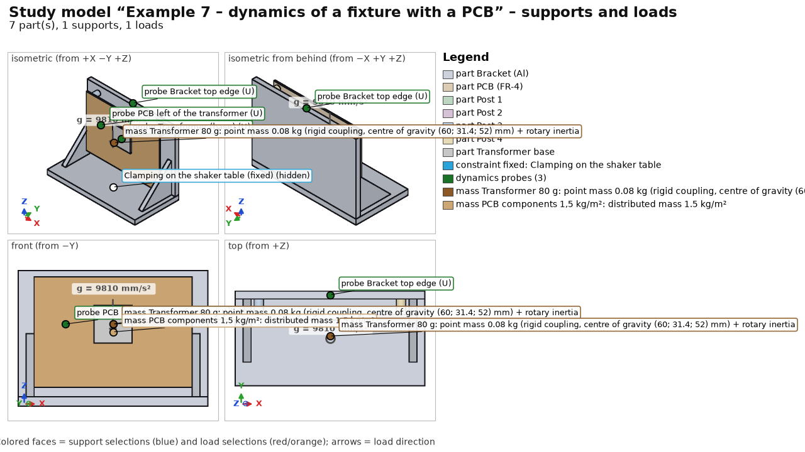
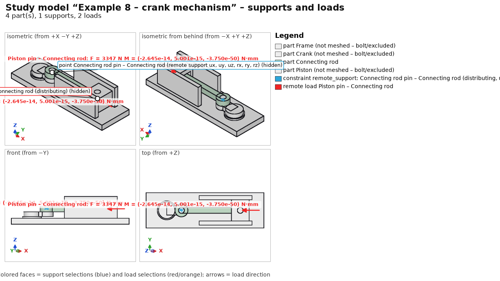
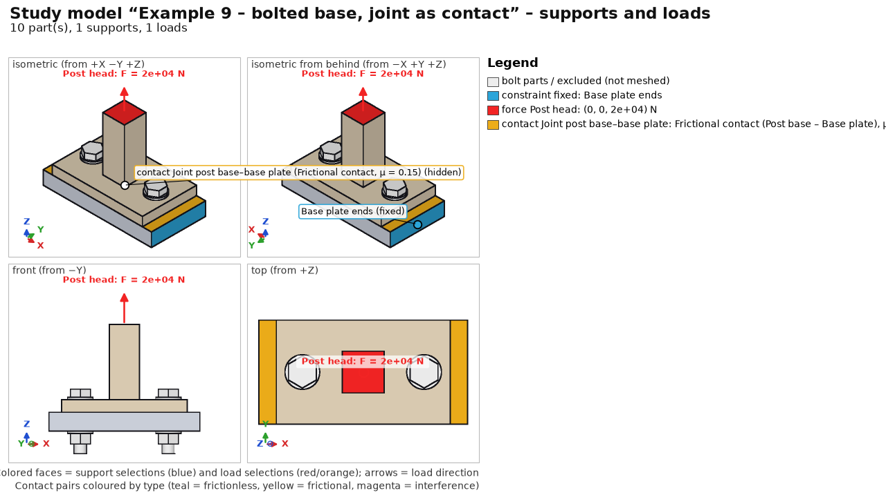
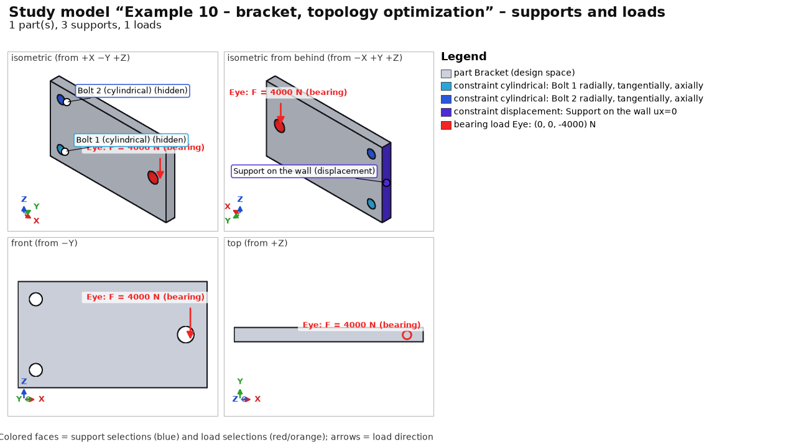

Ten ready-made projects showing the program's capabilities. The guide opens them and explains step by step what is set and why.
The guide is the panel on the right: Show in app switches the program to the state the step describes, Next / Back page through the steps, Help for the step opens the detailed page. You can work freely between steps.
Tip: the guide opens a copy in %LOCALAPPDATA%\FEAStudio\ukazky; Ctrl+S does not overwrite the original.
Without the guide: Ctrl+O → examples in the installation → example1_bracket.fea to example10_bracket_topology.fea.
PLA bracket (Bambu Basic), build direction Z: a vertical plate 60×40×6 mm with two Ø5 screw holes, a horizontal arm 64×24×8 mm, and at its end a boss with an Ø8 eye (load pin) and a triangular rib.

| Step | Specification |
|---|---|
| Materials | Print PLA Bambu Basic (E 2680 / E_z 2160 MPa, Rm 39 / Rm_z 35 MPa) |
| 3D printing | build Z, layer 0.2 mm, line 0.42 mm, 3 perimeters, 5/3 solid layers, gyroid 20 %; Tsai-Wu; creep 1000 h at 30 °C for the Eye load case |
| Supports | cylindrical support of each screw hole (Upper screw, Lower screw), back face ux = 0 |
| Loads | Eye load 200 N (bearing load, downward); Self-weight |
| Mesh | 2.5 mm, tet10 |
| Fatigue | sine 0–1 × Eye load (pulsating 0–200 N), 100 000 repetitions |
Steel base plate 180×70×10 mm (S235) with 4 anchor holes Ø9, column 10×70×90 mm welded by two a4 fillet welds, and a printed PLA arm bolted to the plate with 2× ISO 4017 M6 x 30 - 8.8, ISO 7089 washers and ISO 4032 nuts.

| Step | Specification |
|---|---|
| Materials | Steel S235 (default), arm Print PLA Bambu Basic |
| 3D printing | arm: 3 perimeters, gyroid 25 %, creep 2000 h / 30 °C for Force on the arm eye |
| Joints | 2 M6 8.8 bolts, automatic preload (Bolt preload case); 2 a4 fillet welds (EN 1993-1-8, fatigue of root and toe) |
| Supports | cylindrical support of the 4 anchor holes |
| Heat | 15 W into the column hole; arm convection 10 W/(m²·K) to 25 °C; base plate bottom 20 °C; steady state and 1 h transient ramp-up |
| Loads | Force on the arm eye 300 N (bearing); lateral force 250 N on the column at remote point [35; 35; 150]; Self-weight; Heating in operation (thermal stress from the steady state) |
| Mesh | 4 mm; local refinement of the arm eye 1.5 mm |
| Fatigue | two sine channels shifted by 90° (non-proportional), 200 000 repetitions |
Pressure pipe Ø50/36 with a welded flange Ø120 and a solid cover, connected by 4× ISO 4017 M10 × 45 8.8 bolts with washers and nuts. It verifies the preload computation and the VDI 2230 assessment.

| Step | Specification |
|---|---|
| Materials | Steel S355 (default for flange and cover) |
| Joints | 4 M10 8.8 bolts, automatic preload (tightening factor alpha_A = 1.6, friction μ = 0.12) |
| Supports | fixed support on the bottom end face of the pipe |
| Loads | internal pressure 2.5 MPa on the inner cylinder; axial tension 10 kN on the top end face of the cover; Self-weight; Bolt preload |
| Mesh | 5.0 mm, tet10 |
| Assessment | VDI 2230: assembly preload, tightening torque, safety against yielding and joint opening |
Welded cantilever boom: anchor plate with 4 holes Ø13, horizontal arm 50×60 × 220 mm with an eye for the 5000 N load pin, triangular rib 12 mm thick and 5 a4 fillet welds.

| Step | Specification |
|---|---|
| Materials | Steel S355 (default) |
| Joints | 5 a4 fillet welds (arm to plate at the top, rib welds to the plate and arm) |
| Supports | cylindrical support of the 4 anchor holes; back wall of the anchor plate ux = 0 (resting against a wall) |
| Loads | load 5000 N in the eye (bearing load); lateral force 800 N on the arm end face; Self-weight |
| Mesh | 6.0 mm, tet10 |
| Fatigue | cyclic lift 0–5 kN (200 000 cycles) shifted against the lateral force; IIW and EN 1993-1-8 |
Aluminium finned heat sink 90×80×30 mm with 6 fins and a stainless power module 30×30×4 mm dissipating 40 W.

| Step | Specification |
|---|---|
| Materials | Aluminium EN AW-6082 T6 (heat sink, k = 170 W/(m·K)); stainless steel 1.4301 (module, k = 15 W/(m·K)) |
| Supports | cylindrical support of the 4 mounting holes Ø4.5 mm |
| Heat | 40 W into the module; natural convection h = 15 W/(m²·K) on the fins to 25 °C; steady state and 10 min transient ramp-up |
| Mechanics | Heating in operation (temperature field from the steady state → bimetallic bending and stress); Self-weight |
| Mesh | 4.0 mm, tet10 |
Steel hall made of beams only (study without STEP geometry): two frames, purlins and bracing. Results are not stored in the example; they are computed in seconds.

| Step | Specification |
|---|---|
| Beams | columns HEA 260, rafters IPE 300 (span 12 m, gable roof), purlins UPE 160 pinned, bracing CHS 76.1×3.6 (axial only), fixed column bases; EN 1993-1-1 (column buckling lengths) |
| Loads | Self-weight; snow 0.8 kN/m² on rafters; wind from the left on columns + 2 kN in the gable |
| Solution | statics + 6 natural frequencies (1st ~4.8 Hz) |
Aluminium bracket clamped to a shaker table, 100×70×1.6 mm FR-4 board on 4 brass standoffs Ø6, an 80 g transformer and the board population.

| Step | Specification |
|---|---|
| Materials | Aluminium EN AW-6082 T6; brass CuZn39Pb3; custom “DPS FR-4 (orientačně)” (E 22 GPa, ρ 1,900 kg/m³) |
| Supports | fixed bottom face of the base (= excited base) |
| Dynamics | 80 g point mass with rotary inertia (rigid coupling to the footprint); 1.5 kg/m² surface mass on the board; 20 modes, ζ = 3 %; harmonic sine 1 g in Y 10–2,000 Hz; random ASD 20 Hz 0.008 → 50–500 Hz 0.02 → 2,000 Hz 0.005 g²/Hz (4.8 grms, 0.5 h, Dirlik) – an EXAMPLE in the structure of IEC 60068-2-64, not values from the standard; probes on footprint, board and bracket |
| Mesh | 6 mm, 3 mm at the board (local refinement), tet10, 32 k nodes; about 1 min |
Frame with a bearing and a guide; crank r = 25 mm, connecting rod l = 100 mm, piston (slider); motor 3,000 rpm, gas force 3,000 N.

| Step | Specification |
|---|---|
| Materials | Steel C45 +N (frame, crank, piston); connecting rod Steel 42CrMo4 +QT |
| Motion | 4 bodies (fixed frame); 3 revolute joints proposed from geometry – the rod pins changed to ball + universal (non-redundant set); sliding guide of the piston; drive at constant 314.16 rad/s; 3,000 N on the piston; gravity; kinematics of 1 revolution, 121 outputs |
| Transfer to FEA | instant of maximum reaction in the piston pin → load case of the rod: remote load on eye B, inertia (Inertia), eye A on a distributing remote support (inertia relief); frame, crank and piston excluded |
| Mesh | 2 mm, connecting rod only |
Column base plate 100×60×10 with a 24×24 column on a 120×60×15 base plate, 2× ISO 4017 M10 × 45 8.8 with washers and nuts.

| Step | Specification |
|---|---|
| Joints | 2 bolts M10 8.8, automatic preload (VDI 2230) |
| Contacts | bolted interfaces as frictional contact μ = μ_T = 0.15 (penalty K = 10·E); nonlinear, as a sequence: bolt preload → tension 20 kN |
| Supports | base plate fixed at the ends x = ±60 |
| Loads | tension 20 kN on the top of the column (z = 70) |
| Mesh | 6 mm, tet10, conformal mesh with a split interface |
Full steel plate 160×90×12 mm (S235) as the design space: two Ø11 holes for M10 bolts into a wall (x = 15 mm, z = 15 and 75 mm) and an Ø14 eye at the free end (x = 142 mm, z = 45 mm). Topology optimization removes lightly loaded material and keeps a shape that carries the load at the given volume.

| Step | Setup |
|---|---|
| Materials | Steel S235 (isotropic elastic – a requirement of topology optimization) |
| Supports | cylindrical support of the holes Bolt 1 and Bolt 2; face Support at wall ux = 0 |
| Loads | case Load 4 kN – bearing load in the eye, downward |
| Mesh | 4 mm, tet10 |
| Results | statics of the full design and the result (quantities Topology – density, Topology – final shape) |
| Topology (BESO) | target 40 % volume, filter R 8 mm, ER 4 %/step, at most 60 iterations, all selections protected (holes, eye, wall support); see Results – Topology optimization; result: 40 iterations, volume 40.0 %, compliance 2.2× the full design |
A script creates the examples (geometry via OCCT in Python, the study via the program core):
.venv\Scripts\python.exe -m examples.create --solve .venv\Scripts\python.exe -m examples.create --solve --only 8 (one example only) .venv\Scripts\python.exe -m examples.create --solve --only 10 (example 10: topology, dozens of ccx runs) .venv\Scripts\python.exe -m examples.frames (example 6)
Without --solve only the input is saved. examples\create.py is also a template for building studies from Python – see Automation.